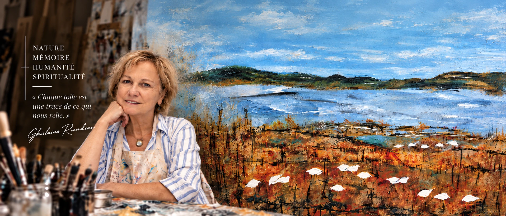
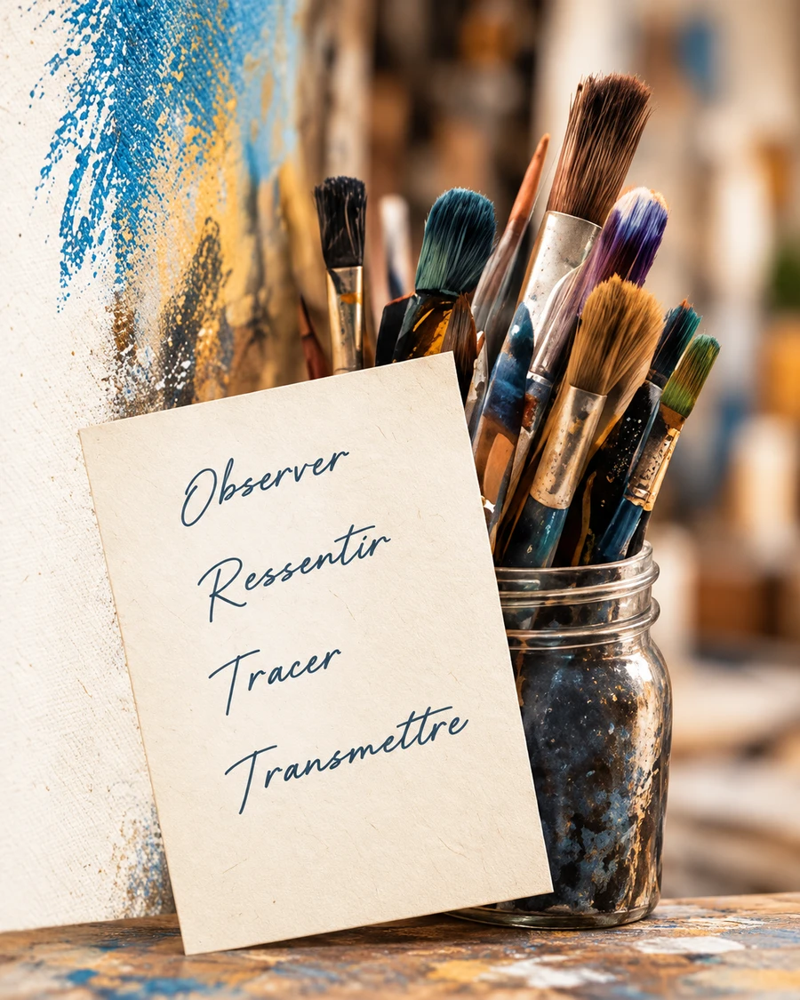
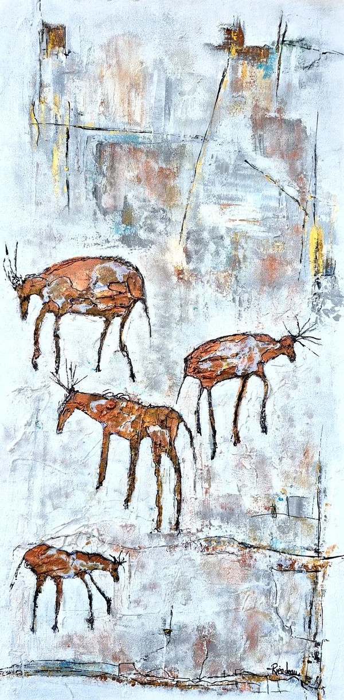
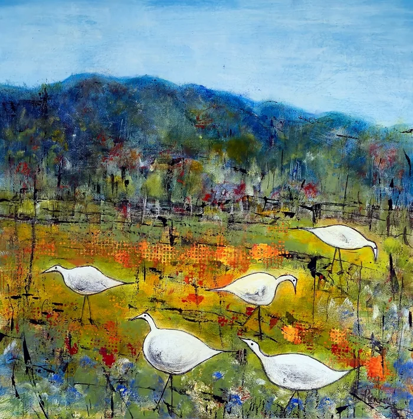
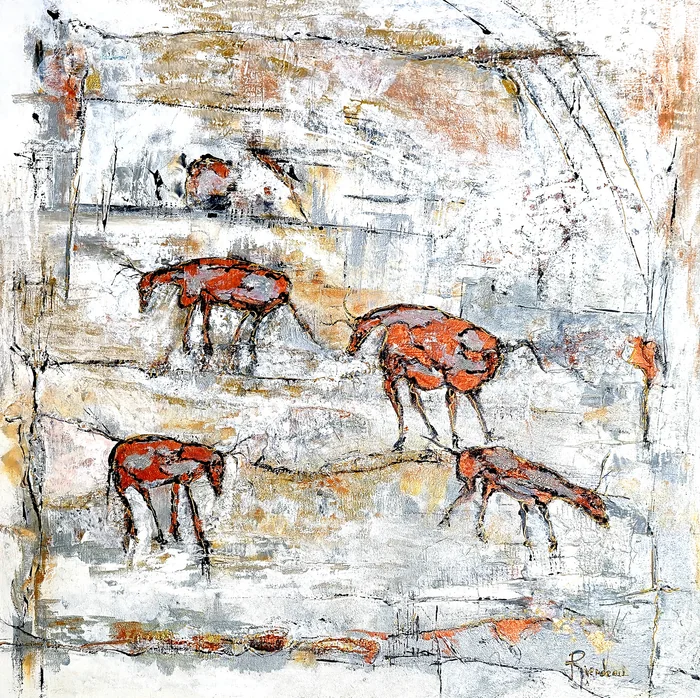

Les séries
Quatre regards
sur un même élan
Entre ciel et matière, mes toiles portent la mémoire du vivant. Traces d’humanité, élans de nature, elles racontent ce qui nous relie et l’émotion d’être au monde.
Explorer toutes les séries« Peindre est devenu
un irrésistible
élan de vie. »

Démarche artistique
Ma création puise dans une relation intime entre la nature et la spiritualité. Les empreintes laissées depuis l’âge de pierre nourrissent mes compositions et ouvrent un vaste espace d’interprétation.
Pinceaux, spatules, lavis, grattages et transparences accompagnent une gestuelle intuitive. J’explore les contrastes de chaud et de froid, les ombrages et le dialogue des couleurs.
Ocres, bleus, orangés et blancs composent un langage où se rencontrent nature et humanité.

Événements et mention
Mes œuvres sont présentées dans des galeries, des symposiums et différents lieux d’exposition au Québec. Ces rencontres sont des moments privilégiés de partage et nourrissent ma démarche artistique.
Voir tous les événements-

au
Galerie Miss Rey
Chambly
Mémoires des Parois
-

En permanence
Galerie Le Vivoir
Saint-Jean-Port-Joli
Le bonheur est dans le Pré
-

Presse
« Mélange des influences de peintures anciennes avec des moyens d’expression plus contemporains. »
Le DevoirEmpreintes du Temps
L’art nous relie.
Découvrez un univers où nature, humanité et émotion se rencontrent.
Découvrir les œuvres